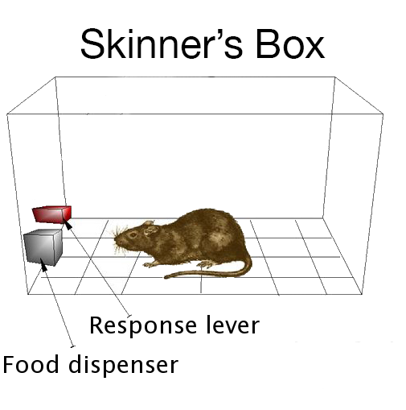
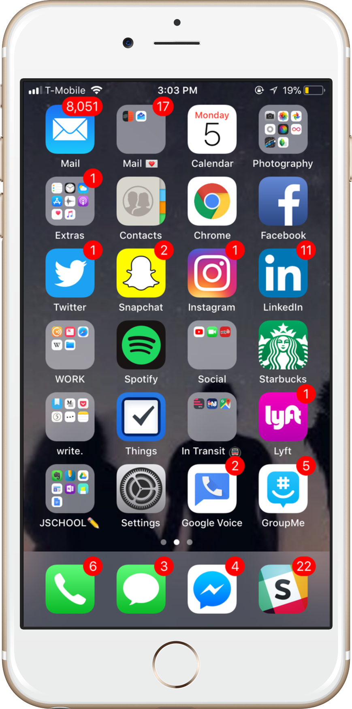
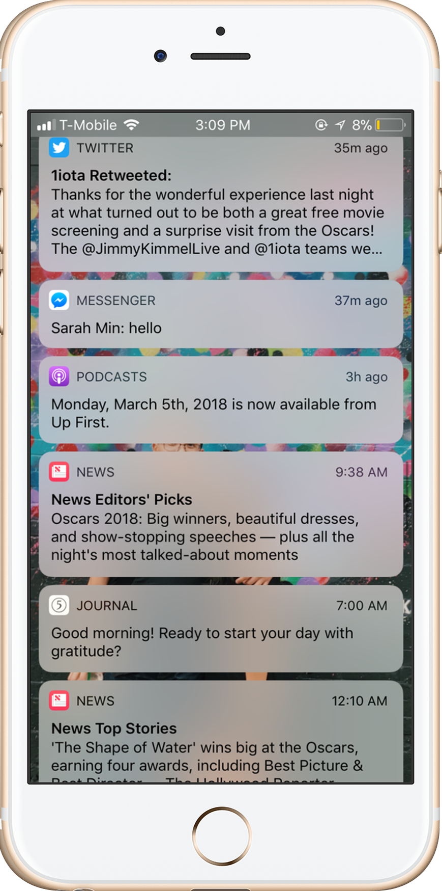
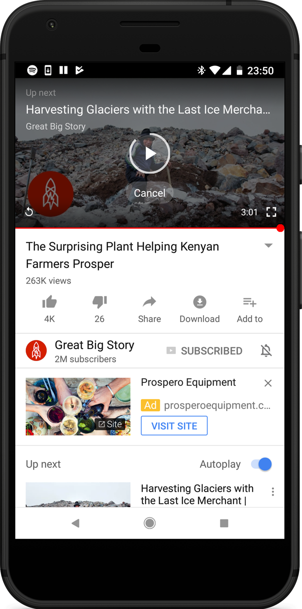

Can't Stop Scrolling: How Social Media Is Designed To Be Addictive
Photo from unsplash. by William Iven
By
Allyson Escobar,
Anurag Papolu
If your alarm went on this morning and your first thought was to grab your phone and check Facebook, you’re not alone. According to a 2017 Deloitte global consumer survey, 89 percent of smartphone users admit to checking social media within the first hour of waking up. The same staggering numbers at night: 81 percent of responders look at their phones before going to bed.
According to Statista, as of January 2018, Facebook remains the leading social network, with 2.2 billion monthly active users, and closely followed by YouTube and WhatsApp.
Social media is purposely designed that way: to make users engage, interact, and inevitably go down a rabbit hole of gifs, videos, listicles and likes. Glaring red notifications push the home screen, and looping, back-to-back videos fill up the newsfeed. Suddenly 10 minutes of scrolling during a work break quickly becomes 45. But… how?
Nir Eyal, author of the book "Hooked: How to Build Habit-Forming Products”, makes the case that successful social media sites and apps use the same technique that is behind slot machines- the variable ratio schedule.
In the 1930s. Harvard psychologist B.K. Skinner demonstrated this by getting rats in a box to hit a lever for food. He found that the rats hit the lever most frequently when the ratio of hits to receiving food changed every once in a while. Sounds familiar? You are the rat, and the irregular notifications you receive is the food, and the act of hitting the lever is constantly checking your phone.

Nir Eyal describes the relationship between Skinner's box and social media use.
“Social media is quickly finding ways to to ‘game-ify’ or incentivize users more through rewards on action and usage--like Snapchat streaks, likes and retweets; ways to incentivize users to keep using the app. It gives the user a chance to have instant gratification because they advance one more day in the goal or streak they’re trying to meet. Like on Apple Watches they track your activity, you fill those circles up, and you get some sort of badge. It’s the same idea for social media: game-ifying it, being able to use your platforms regularly for self-gratification, and also share it with others,” said Ynah Santos, a self-employed web designer/social media consultant.
How many of us feel practically irked, and immediately inclined to click when the red notification button pops up on Facebook? It practically screams for attention.
Click on the blue spots in the following images to see just some of the ways your phone and the things in it are designed to be addictive.
X

Texts, emails, Facebook likes and Instagram directs--The iPhone home screen’s big, bright red push notifications are designed to scream for your attention.
Aaron Marcus researches the principles of effective visual communication in graphic user interface design. "The use of bright colors for danger signals, attention getters, reminders, and cursors is entirely appropriate," Marcus writes. “High chroma red-alerts seem to aid faster response than yellow or yellow-orange if brightness is equal. When too many figures or background fields compete for the viewer’s attention, confusion arises...simplicity, clarity, and consistency are especially important for color design.”
Researcher Francine Frome also studied the spectral sequence in color coding, discovering red, green, and blue as the intuitive colors for a multi-layer display. As device screen brightness changes a viewer’s perception of depth, Frome discovered, the color red comes forward.
Santos says he keeps elements like layout and color pallete when building up sites for clients.
“It’s true in terms of the color design that a lot of social media uses, especially what keeps their user base. Look at Tumblr, Twitter, Facebook; their main color is blue,” said Santos, 24. “Even with [Apple] iMessage, people prefer texting other blue iMessage users compared to the green regular text messaging. Your brain becomes more active and energized when you see the color blue. Even with the natural blue background light on our phones. A bunch of apps that use the color to entice you, not only as a soft vibrant color that expresses something joyful, but blue stimulates the brain enough to keep users engaged.”
Santos also noted that, when working with e-commerce clients selling online products, the click-rate is much higher for blue ‘Buy Now’ buttons. Customers were more likely of going through the whole purchase from start to finish.
X

Apple’s new Notification Center brings all of your favorite apps together in an agenda-like, widget interface, almost like pesky little instant messages you have to swipe to clear.
Adding to the narrative, platforms like Facebook, Google and Instagram have implemented complicated algorithms and that make engaging on social media even more enticing.
X

YouTube’s auto-play algorithm funnels through each user’s search and viewing history, with one goal in mind: to keep users watching.
Researchers at Google talked about the “funnel” video recommendation algorithm for YouTube, which boasts 1.5 billion consumers and uses what’s called a “candidate generation” and “ranking” network to filter through hundreds of recommendations, based on user’s query and search history. “The two-stage approach to recommendation allows us to make recommendations from a very large corpus (millions) of videos, while still being certain that the small number of videos appearing on the device are personalized and engaging for the user," they said.
The feedback loop of social media involved is designed to keep the user engaged to the point of addiction, always coming back for more.
For millennials, Gen Z and even kids who are increasingly on their platforms like Facebook, YouTube, Snapchat, Instagram, Twitter and Reddit, social media use is all-consuming--with some teens saying they prefer it over regular texts and calls.
X
Phones, tablets, laptops on the go--there’s a device for every one of your social networks.
Dindi and Elisha Santos, Ynah’s younger sisters, say they “feel bad” if they don’t frequently check Snapchat. Many of their classmates use to the app to communicate, record and share different parts of their day.
“It’s how you get people’s attention,” Dindi Santos, 17, shared. “It’s like, I want to keep up with everyone, and when you have an ongoing Snapchat streak it’s an achievement. It shows you’re not a loner. And it’s a great way to procrastinate.”